1. String dan Operasi pada String
String adalah tipe data yang digunakan untuk merepresentasikan teks atau urutan karakter. Berikut adalah penjelasan tentang string dan beberapa operasi yang dapat dilakukan pada string:
-
Operasi Penggabungan (+): Operasi penggabungan dalam string menggunakan operator +. Ketika operator + diterapkan pada dua string, karakter-karakter dari kedua string akan digabungkan secara berurutan untuk membentuk satu string baru.
contoh: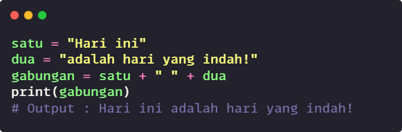
-
Operasi pengulangan (*) dalam konteks string digunakan untuk mengulang string sebanyak jumlah yang ditentukan. Dengan menggunakan operator ini, Anda dapat membuat string baru yang terdiri dari beberapa salinan string asli yang diulang-ulang.
contoh: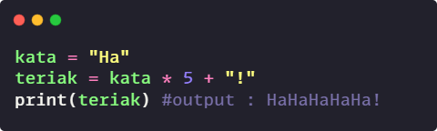
-
Indeks/indexing [] dalam Python digunakan untuk mengakses karakter individual dalam sebuah string berdasarkan posisi indeksnya. Setiap karakter dalam string memiliki indeks yang menunjukkan posisinya dalam urutan karakter tersebut. Penting untuk diketahui bahwa indeks dalam Python dimulai dari 0, yang berarti karakter pertama memiliki indeks 0, karakter kedua memiliki indeks 1, dan seterusnya.
contoh: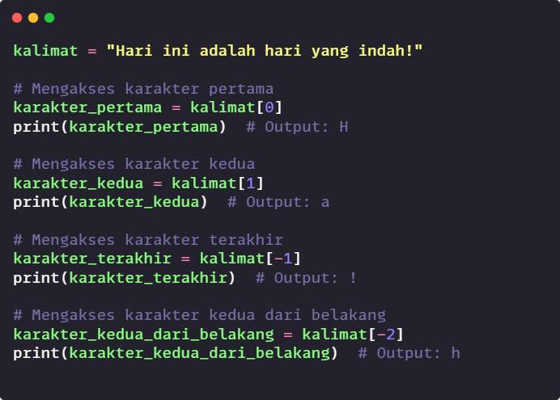
-
Slicing dalam Python digunakan untuk mengambil potongan substring dari string berdasarkan rentang indeks tertentu. Dengan menggunakan slicing, Anda dapat memilih sebagian karakter dari sebuah string dengan menentukan indeks awal dan indeks akhir. Rentang indeks ini ditentukan dengan menggunakan tanda titik dua (:) di antara indeks awal dan akhir.
-
Slicing menggunakan Indeks Awal : Untuk melakukan slicing, Anda dapat menentukan indeks awal sebagai titik awal potongan substring yang ingin Anda ambil. Karakter pada indeks awal akan termasuk dalam potongan substring tersebut. Indeks awal ini dituliskan di sebelah kiri tanda titik dua dalam operasi slicing.
-
Slicing menggunakan Indeks Akhir : Anda juga dapat menentukan indeks akhir sebagai titik akhir potongan substring yang ingin Anda ambil. Karakter pada indeks akhir tidak akan termasuk dalam potongan substring tersebut. Indeks akhir ini dituliskan di sebelah kanan tanda titik dua dalam operasi slicing.
-
Slicing dengan Rentang Indeks : Untuk mendapatkan potongan substring dengan rentang indeks tertentu, Anda dapat menentukan indeks awal dan indeks akhir dalam operasi slicing. Potongan substring yang dihasilkan akan mencakup karakter dari indeks awal hingga sebelum indeks akhir.
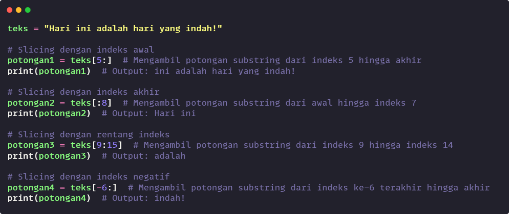
-
-
Metode upper() pada string digunakan untuk mengubah semua karakter dalam string menjadi huruf kapital atau huruf besar. Metode ini mengembalikan salinan string baru dengan semua karakter yang diubah menjadi huruf kapital.
contoh: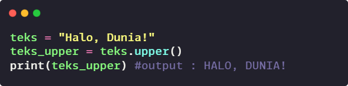Keterangan :-
Metode ini tidak mengubah string asli, melainkan mengembalikan salinan string baru dengan semua karakter diubah menjadi huruf kapital.
-
Karakter non-alfabet akan tetap sama, hanya karakter alfabet yang diubah menjadi huruf kapital.
-
-
Metode lower() dalam Python digunakan untuk mengubah semua karakter dalam sebuah string menjadi huruf kecil. Dengan menggunakan metode ini, Anda dapat dengan mudah mengubah string menjadi bentuk huruf kecil, yang berguna dalam pemrosesan dan pembandingan teks yang tidak memperhatikan perbedaan antara huruf besar dan kecil.
contoh: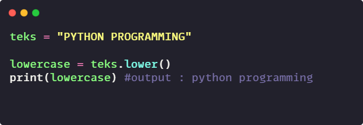Keterangan :-
Metode ini tidak mengubah string asli, melainkan mengembalikan salinan string baru dengan semua karakter diubah menjadi huruf kapital.
-
Karakter non-alfabet akan tetap sama, hanya karakter alfabet yang diubah menjadi huruf kapital.
-
-
Metode split() dalam Python digunakan untuk memisahkan sebuah string menjadi beberapa bagian berdasarkan delimiter (pemisah) yang ditentukan. Secara default, delimiter yang digunakan adalah spasi. Metode ini mengembalikan list yang berisi kata-kata hasil pemisahan.
Syntax dasar :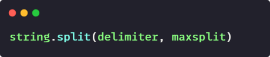Parameter :-
delimiter (opsional) : Delimiter atau pemisah yang digunakan untuk memisahkan string. Jika tidak ditentukan, maka defaultnya adalah spasi.
-
maxsplit (opsional) : Jumlah pemisahan maksimal yang ingin dilakukan. Jika tidak ditentukan, maka semua pemisahan dilakukan.
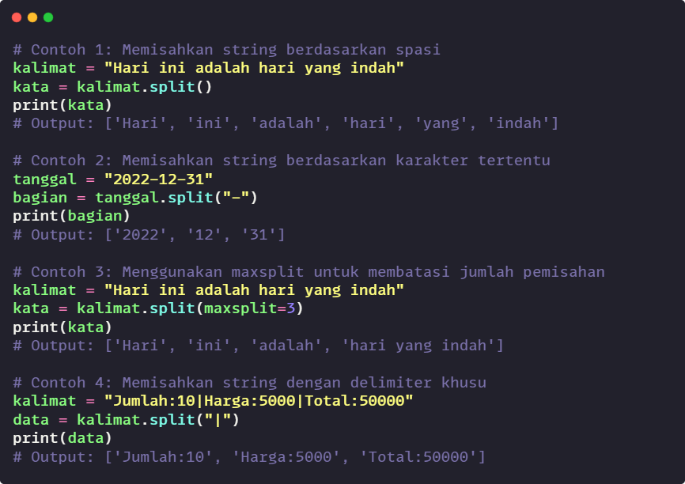
-
-
Metode join() adalah metode bawaan (built-in) dalam Python yang digunakan untuk menggabungkan elemen-elemen dalam sebuah list menjadi satu string, menggunakan pemisah tertentu di antara elemen-elemen tersebut.
Contoh :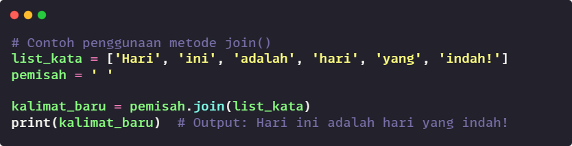Keterangan :-
Metode join() hanya dapat digunakan untuk menggabungkan elemen-elemen dalam list yang berisi tipe data string. Jika ada elemen dalam list yang bukan string, perlu dikonversi ke dalam tipe data string terlebih dahulu sebelum menggunakan metode join().
-
2. List
Di Python, List adalah tipe data yang digunakan untuk menyimpan kumpulan elemen. List dapat berisi elemen-elemen dengan tipe data yang berbeda, dan elemen-elemen tersebut dapat diubah (mutable). Setiap elemen dalam list memiliki posisi yang dikenal sebagai indeks, yang dimulai dari 0.
Membuat dan Mengakses Elemen List
Untuk membuat list, elemen-elemen ditempatkan di antara tanda kurung siku `[]` dan dipisahkan oleh koma. Untuk mengakses elemen list, dapat menggunakan indeksnya.

Operasi dan Metode pada List
Python menyediakan berbagai operasi dan metode yang dapat digunakan untuk memanipulasi list.
-
Append : Metode append() digunakan untuk menambahkan elemen baru ke akhir list.
Contoh :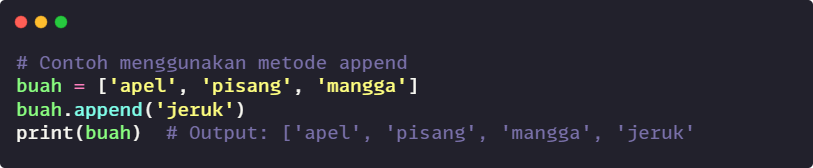
-
Extend : Metode extend() digunakan untuk menambahkan elemen dari list lain ke akhir list.
Contoh :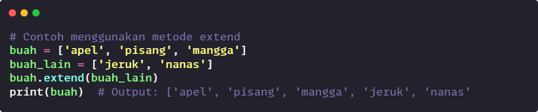
-
Insert : Metode insert() digunakan untuk menyisipkan elemen baru ke posisi tertentu dalam list.
Contoh :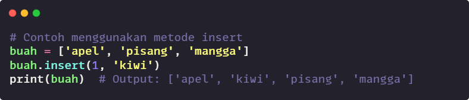
-
Remove : Metode remove() digunakan untuk menghapus elemen pertama dengan nilai tertentu dari list.
Contoh :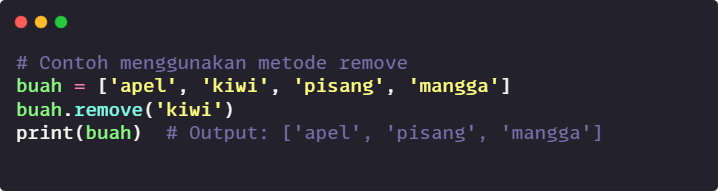
-
Pop : Metode pop() digunakan untuk menghapus dan mengembalikan elemen terakhir dari list.
Contoh :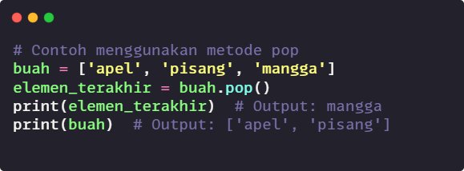
3. Tuple
-
Pengenalan tipe data tuple
Tuple adalah tipe data yang digunakan untuk menyimpan kumpulan elemen. Tuple bersifat tidak dapat diubah (immutable), artinya setelah tuple dibuat, elemen-elemennya tidak dapat ditambah, diubah, atau dihapus. Tuple dapat berisi elemen-elemen dengan jenis data yang berbeda, seperti string, angka, dan lainnya.
Contoh :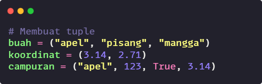Penjelasan :- Pada contoh di atas, kita membuat beberapa tuple dengan menggunakan tanda kurung `()` untuk mengelompokkan elemen-elemennya.
- Tuple `buah` berisi tiga string: "apel", "pisang", dan "mangga".
- Tuple `koordinat` berisi dua angka desimal: 3.14 dan 2.71.
- Tuple `campuran` berisi empat elemen dengan tipe data yang berbeda, yaitu string, integer, boolean, dan float.
-
Perbedaan antara tuple dan list
Tuple bersifat tidak dapat diubah (immutable), sementara list bersifat dapat diubah (mutable). Setelah tuple dibuat, elemen-elemennya tidak dapat ditambah, diubah, atau dihapus. Pada saat yang sama, list dapat ditambahkan elemen baru, diubah, atau dihapus elemen yang sudah ada. Tuple ditulis dengan menggunakan tanda kurung `()`, sedangkan list ditulis dengan menggunakan tanda kurung siku `[]`.
Contoh :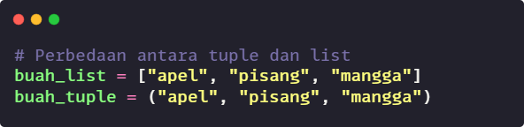Penjelasan :-
Pada contoh di atas, kita membuat sebuah list `buah_list` dan sebuah tuple `buah_tuple` yang berisi elemen-elemen yang sama.
-
List `buah_list` dapat diubah (mutable), sehingga kita dapat menambahkan, mengubah, atau menghapus elemen di dalamnya.
-
Tuple `buah_tuple` tidak dapat diubah (immutable), sehingga elemen-elemen dalam tuple tersebut tidak dapat ditambah, diubah, atau dihapus setelah tuple dibuat.
-
-
Mengakses elemen tuple dan penggunaan operasi pada tuple
Contoh :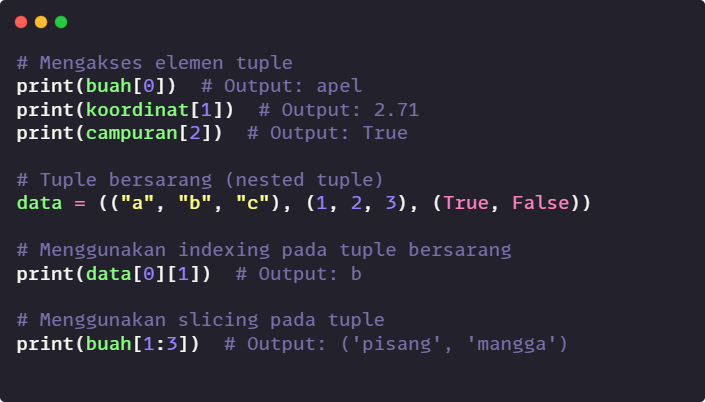Penjelasan:-
Pada contoh di atas, kita mengakses elemen-elemen dalam tuple menggunakan indexing.
-
Elemen tuple dapat diakses menggunakan indexing, di mana indeks dimulai dari 0.
-
Pada tuple `data` yang bersarang, kita dapat mengakses elemen-elemen dalam tuple tersebut menggunakan indexing secara bertingkat.
-
Menggunakan slicing, kita dapat mengambil potongan (subtuple) dari tuple berdasarkan rentang indeks tertentu.
-